▲ 바위가 깔린 하상 양옆으로 단풍이 번진 설악산국립공원의 가을 계곡. 2015년 10월 18일 촬영(위키미디어 파일 정보). 사진=Joycekim77(위키미디어 커먼즈, CC BY-SA 3.0)
"설악산 단풍, 지금 가면 절정일까?" 2026년 10월 11일 기준으로 보면 아직은 아니다. 강원지방기상청이 설악산 첫 단풍을 관측한 날은 9월 28일로 이미 13일 지났고, 기상청이 밝힌 평년 절정일은 10월 17일(앞으로 6일), 산림청·국립수목원이 9월 22일 발표한 예측지도의 설악산 절정일은 10월 20일(앞으로 9일)이다. 이 글은 이 날짜들을 한 줄로 세우고, 외설악(소공원·비선대·울산바위)·내설악(백담사·수렴동)·남설악(오색·주전골·흘림골) 구간별로 어디가 먼저 물드는지 정리했다. 2026년 10월 11일에 열어 확인한 기상청 보도자료, 국립공원공단 설악산국립공원 코스 안내, 한국관광공사 TourAPI 값만 썼고, 확인하지 못한 항목은 그렇게 적었다.
💡 먼저 결론
구간별 절정일을 날짜로 못 박은 공식 예측은 확인하지 못했다. 공식 자료로 확인되는 것은 산 전체 기준일(기상청 평년 10월 17일, 산림청 예측 10월 20일)과 국립공원공단이 울산바위·양폭·백담사 코스를 "10월 중순부터 11월 초순까지 단풍 감상에 적합"이라고 안내한 것이다. 구간별 순서는 "고지대가 먼저 물들고 저지대가 늦다"는 원리에 이 안내를 얹은 카프리즘의 정리다. 기상청 날씨누리 바로가기
1. 올해 기준일 한눈에 — 기상청 80%와 산림청 50%는 다른 기준이다
설악산 단풍 날짜를 두고 기사마다 숫자가 다른 이유는 기관마다 "절정"의 정의가 다르기 때문이다. 강원지방기상청은 9월 28일 보도자료에서 산 전체에서 정상부터 약 20%가 물들었을 때를 첫 단풍, 약 80%가 물들었을 때를 단풍 절정으로 본다고 밝혔다. 반면 산림청 예측지도를 보도한 SBS Biz(9월 22일)는 절정을 단풍 50%로 표기했다(산림청 단풍지도의 기준은 단풍나무류 잎이 50% 변색한 상태로, 산 전체의 80%가 물든 기상청 기준과 다르다). 카프리즘이 앞서 쓴 산림청 2026 단풍 절정 예측 기사의 설악산 10월 20일은 후자(산림청) 기준이다. 두 기준의 날짜를 같은 잣대로 비교하면 안 된다.
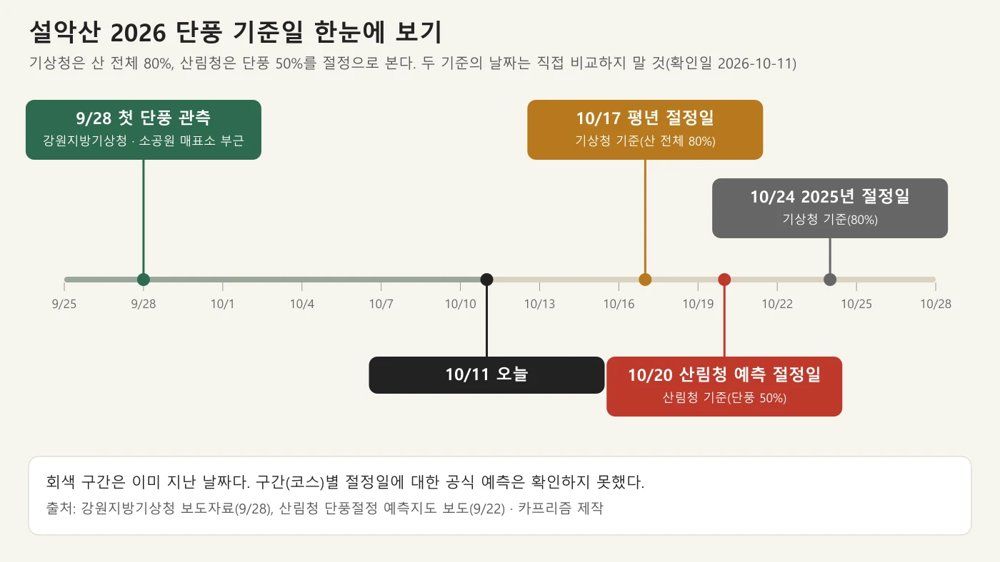
▲ 설악산 2026 단풍 기준일(9/28 첫 단풍 관측, 10/17 평년 절정일, 10/20 산림청 예측 절정일, 10/24 2025년 절정일). 회색 구간은 지난 날짜. 사진=카프리즘 제작
| 구분 | 날짜 | 기준 | 오늘(10/11)과의 관계 | 출처 |
|---|---|---|---|---|
| 산림청 첫 단풍 관측 | 9월 14일 | 강원 점봉산 산림유전자원보호구역, 시민 관측(설악산 관측값이 아님) | 지났다(27일 전) | 산림청 예측지도 보도(SBS Biz 9/22) |
| 설악산 첫 단풍 관측 | 9월 28일 | 산 정상부 약 20%(기상청). 소공원 매표소 부근·중청대피소 인근·대청봉 사진 제공 | 지났다(13일 전). 평년과 같고 작년(10월 2일)보다 4일 빠름 | 강원지방기상청 보도자료(9/28) |
| 설악산 평년 절정일 | 10월 17일(토) | 산 전체 약 80%(기상청) | 앞으로 6일 | 강원지방기상청 보도자료 |
| 설악산 산림청 예측 절정일 | 10월 20일(화) | 단풍 50%(산림청 표기). 전국 5대 명산 중 가장 이름 | 앞으로 9일 | 산림청 예측지도 보도 |
| 작년(2025년) 절정일 | 10월 24일(금) | 산 전체 약 80%(기상청) | 비교값일 뿐 올해 날짜가 아님 | 강원지방기상청 보도자료 |
산림청 예측일은 하루 단위의 점 예측이라 오차 범위는 보도자료에서 확인하지 못했다. 기상청 보도자료도 올해 절정 관측일은 싣지 않았다(발표 시점이 첫 단풍 직후). 단풍이 시작되고 절정까지 통상 2주쯤 걸린다는 설명이 카프리즘의 단풍 절정 시기 계산 기사에 있는데, 이 규칙에 첫 단풍 9월 28일을 대입하면 10월 12일 전후가 되어 평년(10월 17일)보다 앞서므로 참고만 하자.
2. 지금까지 확인된 진행 상황 — 9월 30일 보도 이후 실측값은 확인하지 못했다
연합뉴스(9월 30일 보도, 다음뉴스 게재)는 설악산 단풍이 대청봉(해발 1,708m)에서 9월 28일 시작됐고, 해발 약 900m 부근부터 단풍이 드러나기 시작하며 고도가 높을수록 색이 짙다고 전했다. 같은 기사는 "현재 단풍은 고지대를 지나 한계령 삼거리와 봉정암 아래까지 내려온 상태"이며 "내달 중하순께 절정"에 이를 것으로 보인다고 적었다. 위키트리(10월 7일)도 대청봉에서 9월 말 시작해 10월 중순에 산 전체로 번진다고 설명하지만, 이는 언론 해설이지 관측값이 아니다.
그래서 10월 11일 오늘 코스별 단풍 비율은 확인하지 못했다. 직접 확인하는 방법은 두 가지다. 기상청 날씨누리 '유명산 단풍현황'은 전국 21개 산의 단풍 전·첫 단풍·절정 사진을 지도와 함께 제공하며 제공 기간은 2026년 9월 21일~11월 27일이다(날씨누리 > 현재날씨 > 봄꽃·단풍 > 유명산 단풍현황). 강원지방기상청의 '강원 단풍·기상 융합서비스'는 설악산·오대산·치악산·태백산 국립공원 탐방로의 단풍 현황과 실시간 영상을 제공한다. 국립공원공단 설악산국립공원 누리집에도 CCTV 실시간 영상 메뉴가 있다. 설악산국립공원 누리집 바로가기
▲ 바위가 깔린 하상 양옆으로 붉고 노란 단풍이 번진 설악산국립공원의 가을 계곡. 2015년 10월 18일 촬영(위키미디어 파일 정보). 정확한 지점은 확인하지 못했다. 사진=Joycekim77(위키미디어 커먼즈, CC BY-SA 3.0)
3. 구간(고도)별 시차 — 어디가 먼저 물들고 어디가 늦나
같은 산에서도 정상부와 산기슭의 절정은 2~3주 벌어진다는 설명이 앞의 계산 기사에 있고, 연합뉴스가 전한 "900m 부근부터 시작, 고도가 높을수록 짙음"과 같은 방향이다. 산림청 지도의 10월 20일은 산 전체의 한 날짜일 뿐 구간별 날짜가 아니다. 아래 표의 "시기 판단"은 공식 날짜가 아니라, 공식 안내와 고도 원리를 결합한 카프리즘의 정리(추정)이다.
| 구간 | 대표 코스·지점 | 고도·위치 정보 | 공식 안내 | 시기 판단(추정) |
|---|---|---|---|---|
| 정상부 | 대청봉·중청 | 대청봉 1,708m. 대청봉은 10월 중순부터 늦봄까지 눈으로 덮인다(TourAPI) | 9월 28일 첫 단풍 관측(기상청) | 가장 먼저 시작해 가장 먼저 끝나는 구간. 지금은 단풍보다 추위·강풍 변수가 크다 |
| 고지대 능선 | 한계령 삼거리·서북능선, 봉정암 아래 | 한계령(오색령) 해발 1,004m(TourAPI) | 9월 30일 보도에서 단풍이 이 선까지 하강 | 시작 단계는 지났고 절정권에 들었을 가능성. 실측 확인 못 함 |
| 중간 고도 | 울산바위 정상부·천불동 상부(양폭 일대) | 울산바위는 해발 900m에 가까운 암봉(TourAPI). 양폭은 비선대에서 더 올라간 구간 | 국립공원공단: 울산바위·양폭 코스 모두 '10월 중순부터 11월 초순까지 단풍 감상에 적합' | 10월 17~20일 전후가 산 전체 절정일과 겹치는 구간으로 보임 |
| 저지대 외설악 | 소공원~비선대, 비룡폭포 | 기상청 첫 단풍 관측 사진 위치가 소공원 매표소 부근 | 양폭 코스 안내와 같은 '10월 중순~11월 초순' | 산 전체 절정 이후 10월 하순까지 이어질 가능성이 큰 구간 |
| 내설악 | 백담계곡·수렴동 | 백담사는 외설악보다 한적한 내설악 입구(TourAPI) | 국립공원공단: 백담사 코스 '10월 중순부터 11월 초순까지 내설악 단풍 감상에 적합' | 중간~저지대 계곡이라 10월 중순 이후 본격화로 보임 |
| 남설악 | 주전골(오색)·흘림골 | 오색약수터에서 한계령(오색령) 방면 계곡. 흘림골은 등선대·여심폭포 일대 | 주전골은 '설악산의 대표 단풍 코스'(TourAPI), 선녀탕·금강문 일대 단풍이 최고라 안내(국립공원공단). 시기는 공식 기간 확인 못 함 | 저지대 계곡이라 외설악 저지대와 비슷하게 10월 하순 쪽으로 보임 |
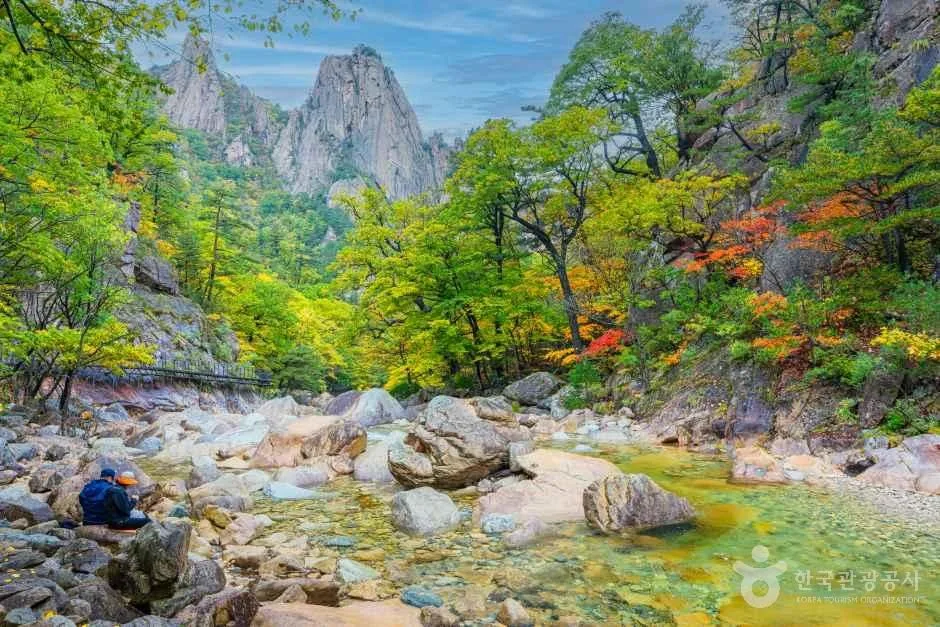
▲ 초록 숲 사이로 붉은 잎이 섞이기 시작한 설악산 계곡과 암봉. 촬영 시기와 위치는 원본 설명에 없다. 사진=한국관광공사
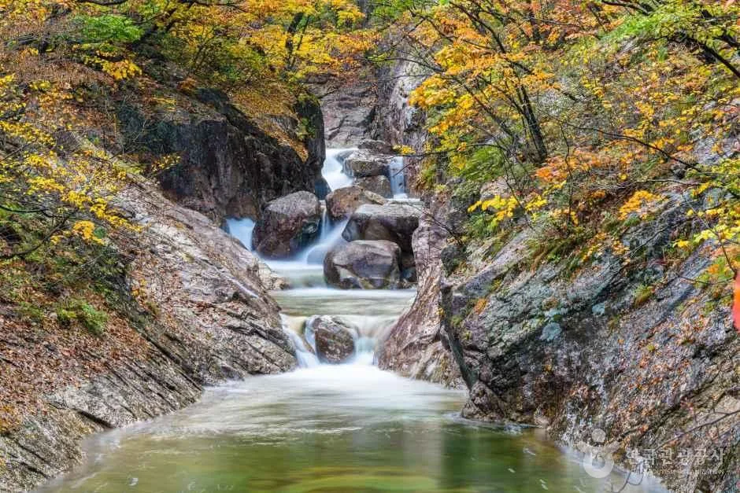
▲ 바위 협곡 사이로 물이 흘러내리고 양옆에 노란 단풍이 든 설악산국립공원 계곡. 촬영 시기와 정확한 지점은 확인하지 못했다. 사진=한국관광공사
4. 대표 단풍 코스 4곳 — 공식 거리·시간·특징
거리와 시간은 국립공원공단 설악산국립공원 '코스별난이도' 안내에 표기된 값이다. 시간은 편도 기준이며, 왕복 표기가 따로 있는 코스는 별도로 적었다.
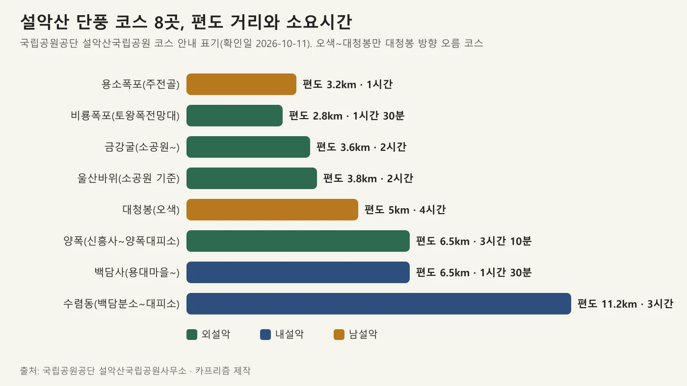
▲ 설악산 단풍 코스 8곳의 편도 거리와 소요시간(국립공원공단 코스 안내 표기). 사진=카프리즘 제작
| 코스 | 구간·거리·시간 | 특징 | 10월 중순~11월 초순 적합 표기 |
|---|---|---|---|
| 울산바위(외설악) | 설악동탐방지원센터~흔들바위(계조암) 2.8km(1시간), 흔들바위~울산바위 1.0km(1시간). 편도 3.8km·2시간, 왕복 약 7.6km·4시간 | 흔들바위~울산바위는 철제 데크가 가파르고 계단이 많음. 낙석 가능 구간 | 있음(10월 중순부터 11월 초순) |
| 비선대·양폭(외설악) | 소공원~비선대 3.0km(1시간 20분), 비선대~금강굴 0.6km(40분, 편도 3.6km·2시간), 비선대~양폭대피소 3.5km(1시간 50분, 신흥사~양폭대피소 편도 6.5km·3시간 10분) | 와선대·장군봉·비선대·귀면암·오련폭포. 비선대~양폭은 가파른 계단·데크 구간 있음. 낙석 주의 | 양폭 코스에 있음. 산불조심기간·해빙기에는 비선대~천불동계곡 고지대 구간 통제 관리 |
| 백담사·수렴동(내설악) | 용대마을~백담사 6.5km(도보 1시간 30분). 백담분소~수렴동대피소 11.2km(3시간) | 백담계곡과 만해 한용운의 백담사. 수렴동은 물길을 따라 걷는 평탄한 길로 영시암을 지난다. 용대마을~백담사는 일반 차량 통행 불가, 셔틀버스 이용 | 백담사 코스에 있음 |
| 주전골(남설악) | 약수터탐방지원센터~용소폭포탐방지원센터 3.2km, 편도 1시간(왕복 6.4km·2시간). 난이도 '하' | 오색약수·선녀탕·금강문·용소폭포. 나무 데크가 많아 완만. 계곡 낙석 주의 | 주전골 안내문에는 기간 표기가 없음(단풍 대표 코스로 소개) |
울산바위는 TourAPI가 둘레 약 4km, 6개 봉우리로 이뤄진 바위산이며 정상에서 대청봉과 외설악이 펼쳐진다고 소개한다. 비선대는 TourAPI가 가을이면 주변이 오색 단풍으로 물든다고 적은 천불동계곡의 암반이다. 주전골은 오색약수터탐방지원센터에서 성국사·선녀탕을 거쳐 용소폭포탐방지원센터에 이르는 3.2km로, TourAPI 운영 시간은 3~10월 03:00~17:30, 11~2월 04:00~17:30이다(오색분소 033-672-2883). 백담사 셔틀버스는 국립공원공단 안내로 성수기 오전 8시~오후 6시, 비수기 오전 9시~오후 5시이고 요금은 편도 성인 2,500원·소인(만 18세 이하) 1,200원이다(용대향토기업 033-462-3009, 변동 가능).
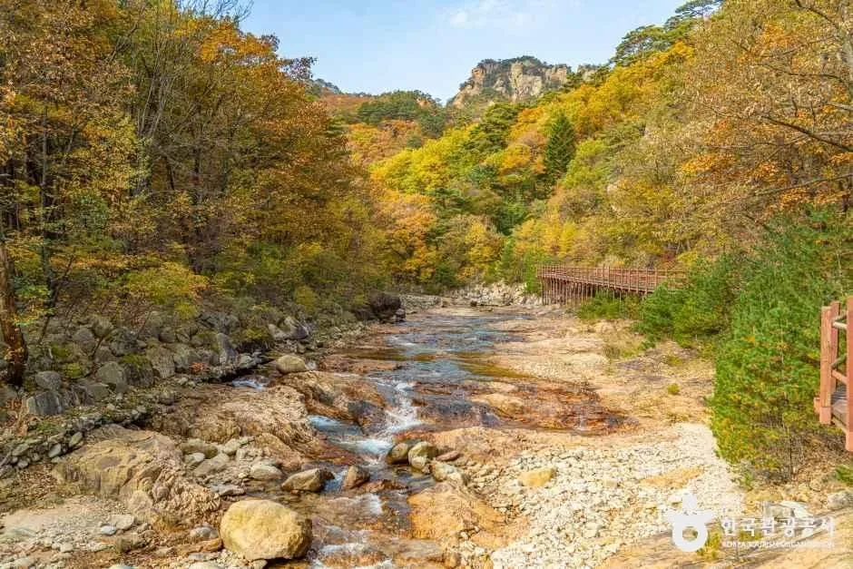
▲ 주전골 일대 가을 계곡. 촬영 시기는 확인하지 못했다. 사진=한국관광공사
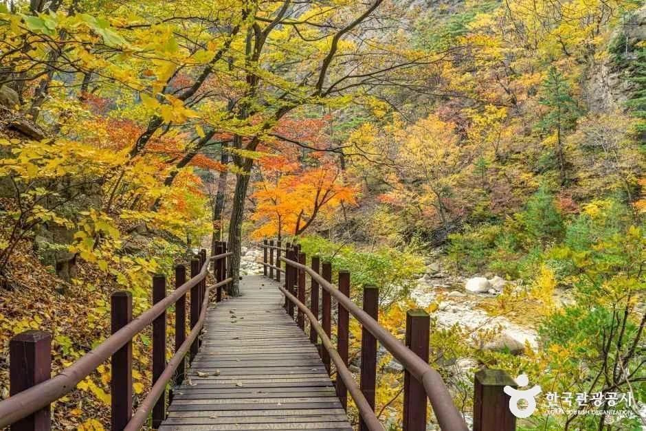
▲ 주전골 일대 나무 데크 탐방로. 촬영 시기는 확인하지 못했다. 사진=한국관광공사
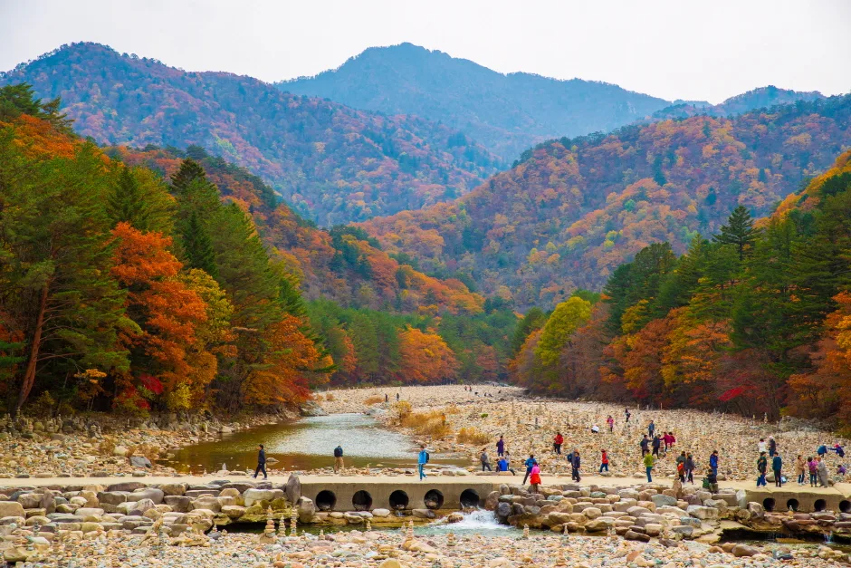
▲ 백담사 앞 계곡의 가을 풍경. 촬영 시기는 확인하지 못했다. 사진=한국관광공사
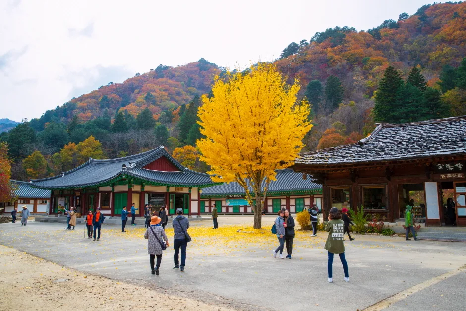
▲ 단풍철 백담사 경내의 은행나무. 촬영 시기는 확인하지 못했다. 사진=한국관광공사
5. 고지대·남설악 — 대청봉·한계령·흘림골은 따로 확인
대청봉 단풍을 노린다면 이미 늦었을 수 있다. 정상부는 9월 28일에 시작돼 9월 30일 보도 시점에 한계령 삼거리까지 내려왔고, 대청봉은 TourAPI에 10월 중순부터 늦봄까지 눈으로 덮인다고 적혀 있다. 국립공원공단 코스 안내 기준 대청봉은 오색 편도 5.0km·4시간(왕복 10km·8시간), 한계령~대청봉~비선대~소공원이 19.3km·12시간, 백담~대청봉~소공원이 1박 2일 23.9km로 장거리다. 오색 코스는 가파른 돌계단과 언덕이 이어져 초보자에게 만만하지 않다고 안내돼 있다.
| 코스 | 거리·시간(국립공원공단) | 메모 |
|---|---|---|
| 대청봉(오색) | 편도 5.0km·4시간, 왕복 10km·8시간 | 대청봉 최단 코스. 숲길이라 조망이 적고 경사 가파름 |
| 대청봉(한계령) | 한계령탐방지원센터~대청봉 8.3km(5시간 20분). 한계령~대청봉~비선대~소공원 19.3km·12시간 | 서북능선. 짧지만 험함 |
| 대청봉(백담) | 백담~봉정암 10.6km(4시간 30분)~대청봉 2.3km(1시간 40분). 백담사~소공원 1박 2일 23.9km·12시간 50분 | 봉정암 아래까지 단풍 하강(9/30 보도) |
| 공룡능선 | 소공원~오색 편도 19.1km·14시간 40분 | 매우 장거리. 1박 2일 계획 수준 |
한계령(오색령)은 해발 1,004m 고갯길로 44번 국도 오색령 구간이 강원도 최고의 드라이브 코스로 소개된다(TourAPI). 휴게소는 상시 개방, 탐방로는 03:00~12:00이다. 단풍을 도로에서 보려는 독자에게는 가장 먼저 단풍이 내려오는 고지대 조망 지점이다.
흘림골은 TourAPI에 일 5,000명 시간지정제로 운영되며 국립공원공단 예약 시스템에서 예약해야 한다고 적혀 있다. 운영 시간은 평시 09:00~14:00, 10월 성수기 08:00~15:00이고, 2015년 수해·낙석으로 통제됐다가 2022년 7년 만에 개방됐다. 다만 이 항목의 TourAPI 수정일은 2025년 6월이라 2026년 가을 예약 방식과 잔여 시간대는 확인하지 못했다. 설악산국립공원사무소(033-801-0900)에 확인하자.
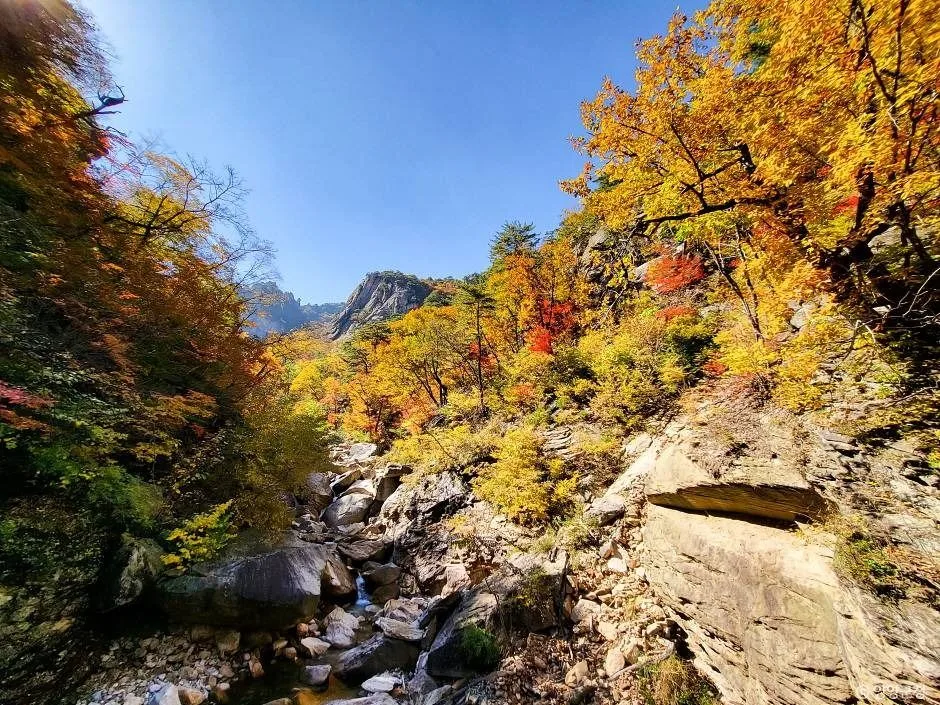
▲ 흘림골 일대 가을 계곡과 암릉. 촬영 시기는 확인하지 못했다. 사진=한국관광공사
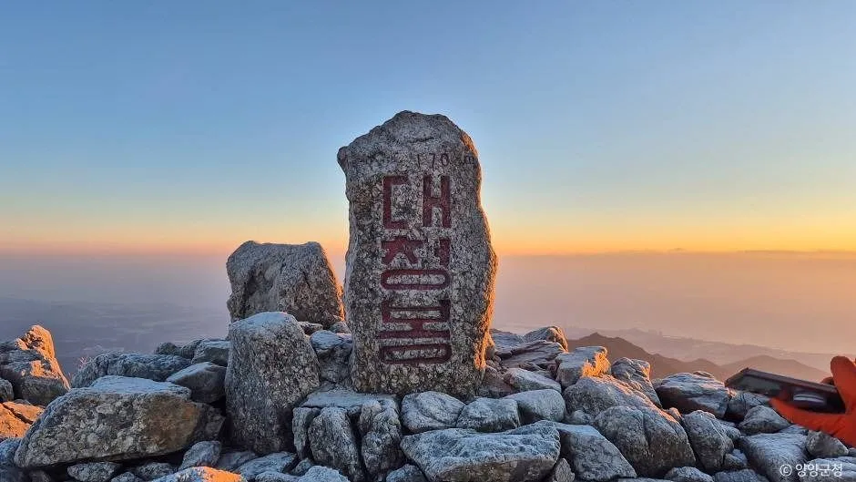
▲ 대청봉 정상 표지석. 촬영 시기는 확인하지 못했다. 사진=한국관광공사
6. 날짜별 추천 일정 — 주말과 평일을 구간에 맞춘다
아래는 앞의 기준일(평년 10월 17일, 산림청 예측 10월 20일)에 구간별 시차를 맞춘 카프리즘의 제안이다. 날씨(비·강풍)와 올해 실제 진행 속도에 따라 어긋날 수 있다.
| 날짜 | 기준일과의 관계 | 추천 구간 | 유의점 |
|---|---|---|---|
| 10월 11일(일) | 한글날 연휴 마지막 날. 평년 절정까지 6일 | 한계령 도로 조망, 남설악 계곡 | 귀경 정체 우려가 있어 늦은 출발은 피하기. 코스별 단풍 비율은 확인 못 함 |
| 10월 12일(월) | 첫 단풍 후 2주가 되는 날 | 한계령·울산바위 정상부 등 중간 고도 | 월요일 휴무 여부는 시설별로 다름. 케이블카는 날씨에 따라 운행 변동 |
| 10월 17일(토)~18일(일) | 평년 절정일 당일, 산림청 예측보다 2~3일 이름 | 울산바위, 비선대·양폭, 주전골 | 소공원 주차장은 단풍철 주말에 일찍 만차. 아래 주차 기사 참고 |
| 10월 19일(월)~20일(화) | 산림청 예측 절정일(10/20) | 소공원~비선대, 백담사·수렴동, 주전골 | 평일이라 주말보다 덜 붐빌 가능성(혼잡 공식 자료는 확인 못 함) |
| 10월 24일(토)~25일(일) | 2025년 절정일(10/24)과 같은 시기 | 저지대 계곡(소공원 일대·백담계곡·주전골 하부) | 고지대는 이미 낙엽·눈 단계일 수 있어 대청봉 산행은 비추천 |
| 10월 31일(토)~11월 1일(일) | 산림청 전국 단풍나무류 절정 예측일(10/31) | 설악산은 마무리 단계로 추정. 남쪽 산으로 이동 검토 | 산림청 예측일 주말표 참고 |
7. 탐방·주차·셔틀·통제 — 상세는 기존 기사로, 여기서는 확인할 것만
소공원 주차 요금(승용차 6,000원), 만차 시 경찰·모범운전자 수신호 진입 통제, 설악동 BC지구 주차장과 무료 셔틀, 권금성 케이블카의 당일 현장 구매 방식은 설악산 단풍철 소공원 주차·셔틀 가이드에 정리했다. 그 기사는 예년 사례를 바탕으로 하므로 2026년 단풍철 통제 시간과 셔틀 운행 공지는 이번에 확인하지 못했다. 비선대 TourAPI 정보에는 "코스별 입산통제시간이 상이하므로 홈페이지 참조", 주차장 관리실 033-636-4050으로 적혀 있다.
| 항목 | 확인한 내용 | 출처·상태 |
|---|---|---|
| 설악산 통제 현황 | 국립공원공단 설악산국립공원 통제정보 페이지는 '정상' 표시(표시 기준시간 2026-08-17 22:43). 올해 가을철 고지대 입산통제 공고는 확인하지 못했다 | 설악산국립공원 통제정보 |
| 가을철 산불조심기간 | 2026년 기간은 공고를 확인하지 못했다. 2025년은 10월 20일~12월 15일이었고 공원별 탐방로 통제는 따로 정해졌다 | 입산통제 날짜 정리 기사 |
| 도로변 주정차 | 단풍철 갓길 주정차는 단속 대상이 될 수 있다 | 단풍철 갓길 주정차 기사 |
| 설악산국립공원사무소 | 033-801-0900(TourAPI 표기). 소공원 상시 개방이나 기상에 따라 입산 통제될 수 있음 | TourAPI |
| 혼잡 시간대 | 시간대별 방문객 수는 공식 자료를 확인하지 못했다. 소공원은 단풍철 주말 오전 이른 시간에 만차가 된다는 예년 사례만 있다 | 기존 주차 기사 |
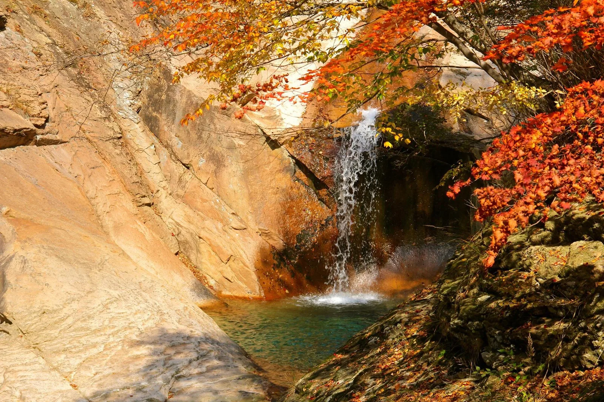
▲ 바위 절벽 사이로 떨어지는 작은 폭포에 붉은 단풍이 걸린 모습. 위키미디어 파일명은 'Seoraksan in the Fall 2'. 촬영 시기와 정확한 지점은 확인하지 못했다. 사진=Joycekim77(위키미디어 커먼즈, CC BY-SA 3.0)
8. 자주 묻는 질문
Q. 지금 가면 절정인가요?
A. 10월 11일 기준 코스별 실측 비율은 확인하지 못했다. 9월 30일 보도로는 단풍이 한계령 삼거리와 봉정암 아래까지 내려온 단계였고, 기상청 평년 절정은 10월 17일, 산림청 예측은 10월 20일이다. 출발 당일 날씨누리 '유명산 단풍현황'과 CCTV로 확인하자.
Q. 어느 코스가 먼저 물드나요?
A. 고지대가 먼저다. 대청봉이 9월 28일에 시작했고 소공원 일대·내설악·남설악 계곡 같은 저지대는 나중이다. 코스별 날짜를 못 박은 공식 예측은 없다.
Q. 기상청 절정과 산림청 절정이 왜 다르죠?
A. 기상청은 산 전체 약 80%, 산림청은 단풍 50%를 절정으로 쓴다. 날짜를 직접 비교하지 말자.
Q. 케이블카·흘림골은 예약이 되나요?
A. 권금성 케이블카는 기존 기사 기준으로 사전 예약이 안 되는 당일 현장 구매다. 흘림골은 TourAPI에 시간지정제 예약이 필요하다고 적혀 있으나 올해 운영은 확인하지 못했다.
Q. 가을철 입산통제는 언제부터인가요?
A. 2026년 설악산 가을철 통제 공고는 확인하지 못했다. 공고 전에는 날짜를 가정하지 말고 설악산국립공원 통제정보를 보자.
9. 같이 보면 좋은 카프리즘 기사
- 설악산 단풍철 소공원 주차·셔틀 가이드
- 산림청 2026 단풍 절정 예측 기사
- 산림청 예측일로 짠 단풍 주말표
- 단풍 절정 시기 계산 가이드
- 속초 여행 가이드
- 양양 낙산사 드라이브 가이드
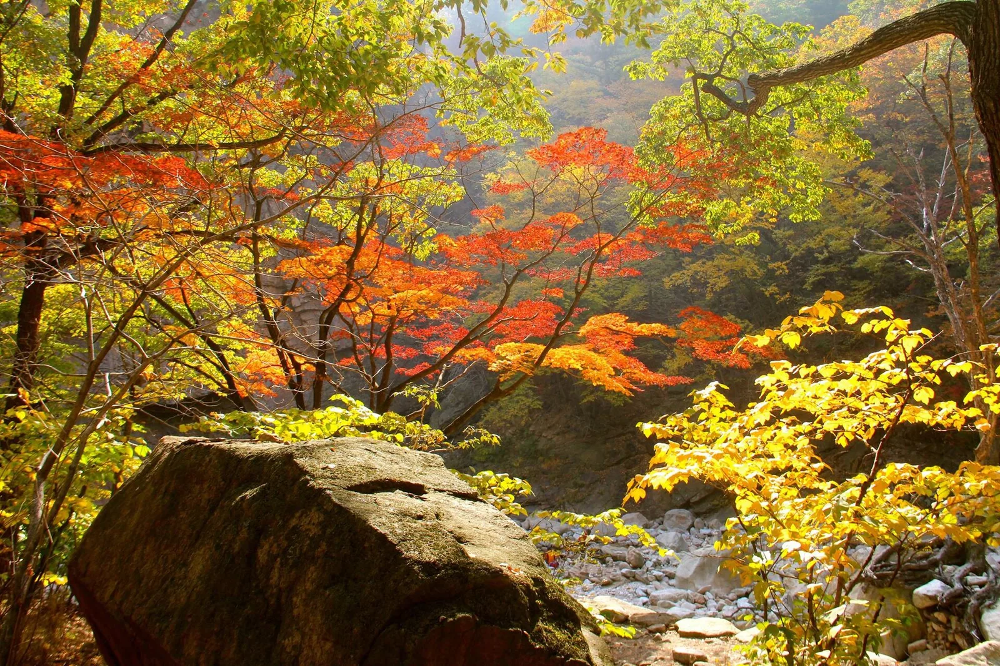
▲ 붉고 노란 단풍잎이 겹친 숲. 위키미디어 파일명은 'Seoraksan in the Fall 3'. 촬영 시기는 확인하지 못했다. 사진=Joycekim77(위키미디어 커먼즈, CC BY-SA 3.0)
✅ 출발 전 체크리스트
· 날씨누리 '유명산 단풍현황'과 설악산국립공원 CCTV로 당일 단풍 상태 확인
· 기상청 절정(80%)과 산림청 절정(50%) 날짜를 섞어 쓰지 않기
· 주말 소공원 진입은 BC지구 주차장·셔틀 대안을 먼저 정하기(주차 기사 참고)
· 대청봉·한계령 방면은 10월 중순부터 눈·강풍·저온 변수, 장비와 입산통제 확인
· 흘림골은 시간지정제 예약 여부를 사무소에 확인(033-801-0900)
· 백담사는 일반 차량 통행 불가, 용대마을 셔틀 운행 시간 확인(033-462-3009)
· 가을철 산불조심기간 공고가 나오면 입산통제 구간 재확인
10. 정리
설악산 첫 단풍은 9월 28일에 이미 관측됐고, 평년 절정일은 10월 17일(기상청 80% 기준), 산림청 예측 절정일은 10월 20일(50% 기준)이다. 두 기준은 달라 직접 비교하면 안 된다.
구간별 절정일을 못 박은 공식 예측은 확인하지 못했다. 국립공원공단은 울산바위·양폭·백담사 코스를 10월 중순부터 11월 초순까지 단풍 감상에 적합하다고 안내하며, 고지대가 먼저 물들고 소공원·내설악·남설악 계곡 같은 저지대가 늦다는 순서로 일정을 짜면 된다. 2026년 가을철 입산통제 공고는 확인하지 못했다.